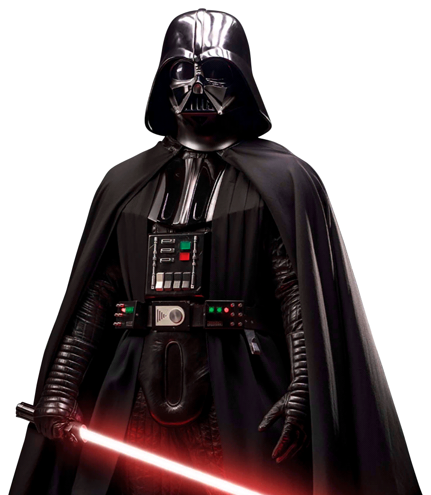

StarWars
Dark Side or Light Side


Episode IV
It is time to figure out who you side with. The Dark Side reigns over the galaxy remaining surpreme despite losing the Death Star.
The Light Side is growing in numbers and increasing its influence to young holders of the force.
Pursued by the Empire’s sinister agents, the Light side is trying to hold strong to gain more votes than the Dark side
Click and choose which side you are on, the galaxy depends on you and who will be the winner of this intergalatic poll